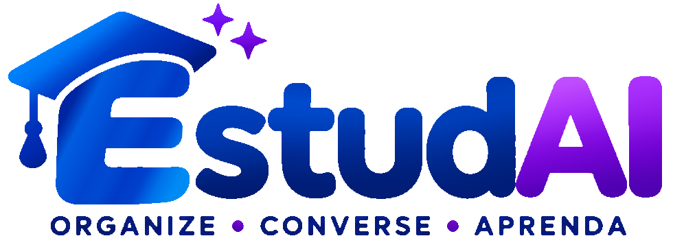
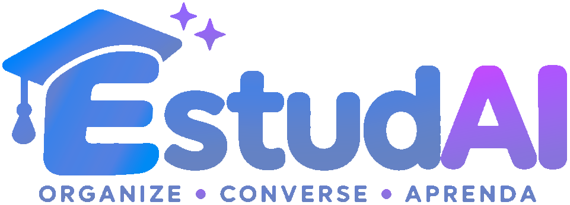

Modo claro

Modo escuro fornecido

Claros: vetores originais preservados. Escuros: arquivos fornecidos em “svg dark”, sem redesenho. Este arquivo é uma comparação local, não evidência de teste manual.

